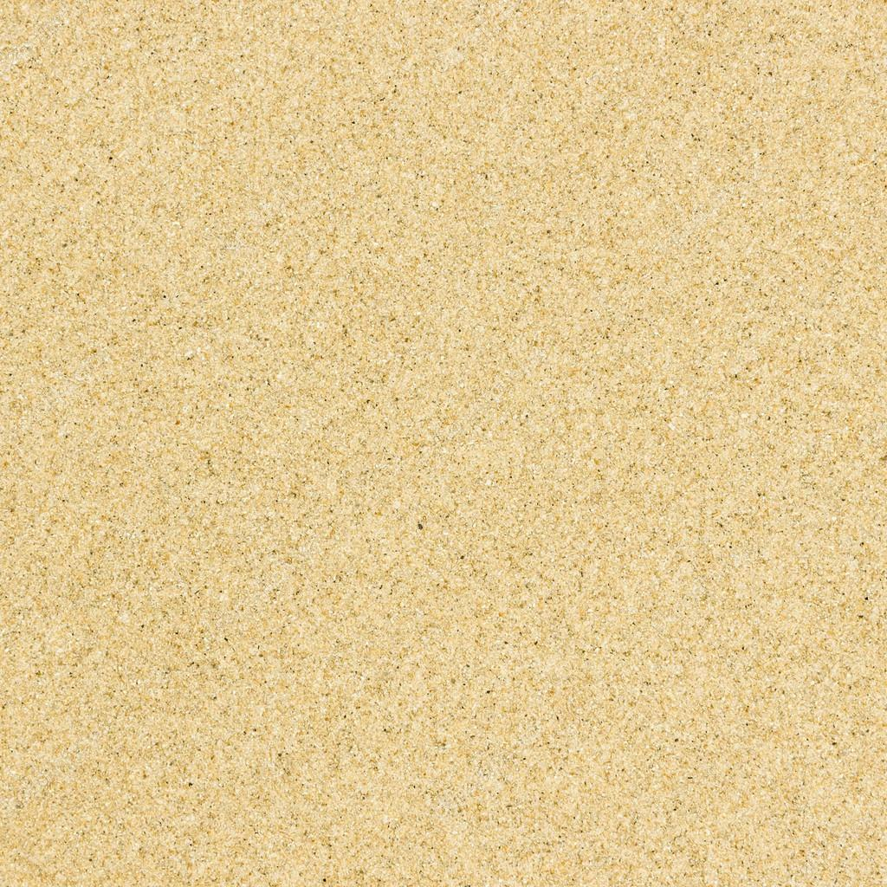
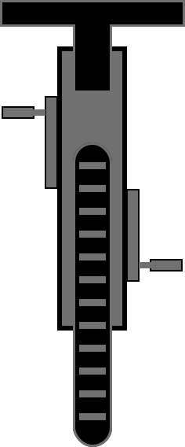
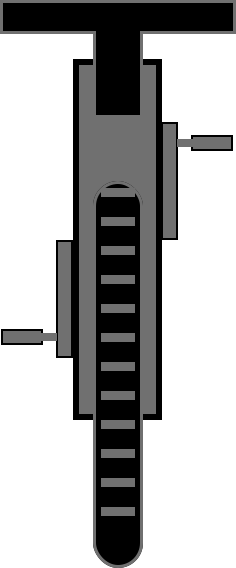

<ion-content>

    <div class="invisible">
        
        
        
        
    </div>

    <canvas id="sand2" class="fond"></canvas>
    <canvas id="bike2" class="secondCanvas"></canvas>
    <canvas id="speed2" class="firstCanvas"></canvas>

    <ion-row id="backgrnd" class="nine-row">
        <ion-col col-6>
            <div id="sliderr" class="slider visible">
                <div id="slidd" class="slide"></div>
                
            </div>
        </ion-col>
        <ion-col col-6>
            <div id="sliderr2" class="slider visible">
                <div id="slidd2" class="slide"></div>
                
            </div>
        </ion-col>
        <div class="bottom-div">
            <h4>{{indications}}</h4>
            <button color="danger" ion-button="" (click)="nextStep()">J'ai compris</button>
        </div>
    </ion-row>
</ion-content>
